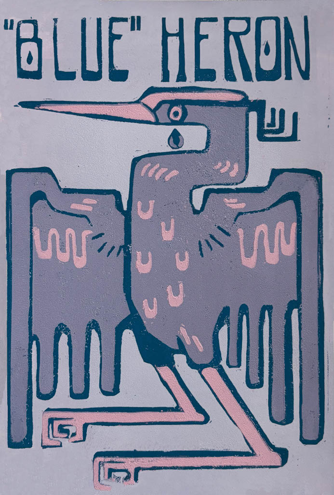

Grace Matson
Spring, 2025
Digital Design II, DSGN341
 HI! I'M GRACE MATSON. Or I'm Fowlren... if you follow me on Instagram. I'm a graphic designer, illustrator, bird enthusiast, music collector,
and Zelda fanatic based in Bellingham Washington. When it comes to design, I enjoy branding, motion, and custom typography the most right now.
I also do illustration; that's something else I've also enjoyed for a long time.
My image on this page is a linocut print I did a couple of years ago
for my premajor portfolio. I feel like it represents me because I really love birds and wildlife. These were limited edition because the block is destroyed in the process of
adding different colors In current days, I'm learning how to make stuff look cool at Western Washington University.
I'm in my junior year and in my second year completing my BFA in Graphic Design.
Outside of class, you can find me enjoying an iced coffee on my balcony while I watch the trees blow around.